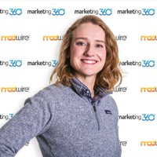

My name is Katherine Fleming and I live in Fort Collins, Colorado, where I am currently attending the University of Denver (DU) Coding Bootcamp in order to become more well-versed in the world of developing. After graduating from Colorado State University with a bachelor's degree in Communications and Political Science, I went on to pusue a career in marketing. My professional background is in marketing and communications, with an emphasis in political consulting. Once I graduate from the DU Coding Bootcamp, I hope to be able to market myself as a political consultant/strategist that can provide my clients with a one-stop-shop for all their communications, marketing and web development needs.
When I'm not studying or working, I enjoy hitting the gym and going on morning runs (I am in the process of training for a marathon that will take place in early April). I also cherish the time I get to spend with my fianceé and our dog, Berlin. We love the outdoors and always take Berlin along on our hiking, mountain biking and fly fishing adventures; she even makes a pretty good climbing partner, although she will lay claim to the bouldering mat when we're not watching.